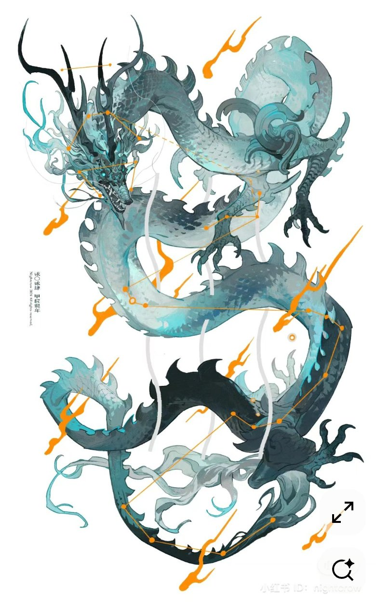
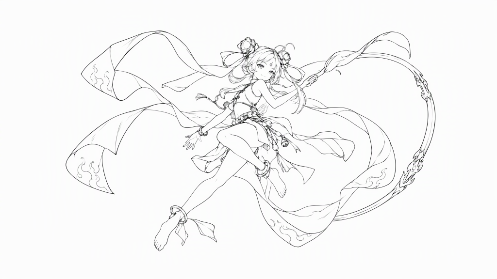
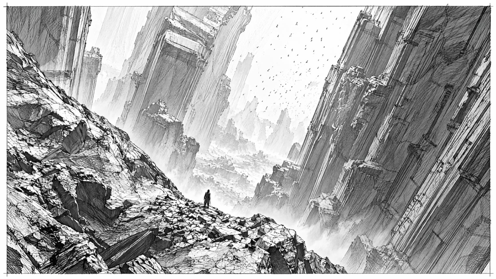
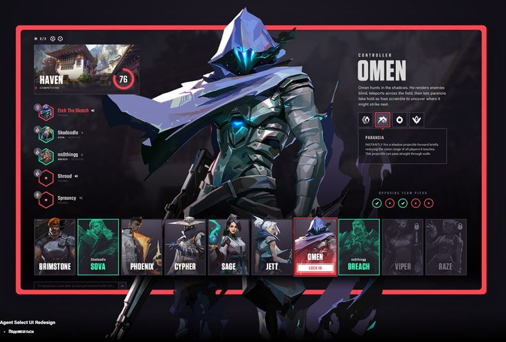
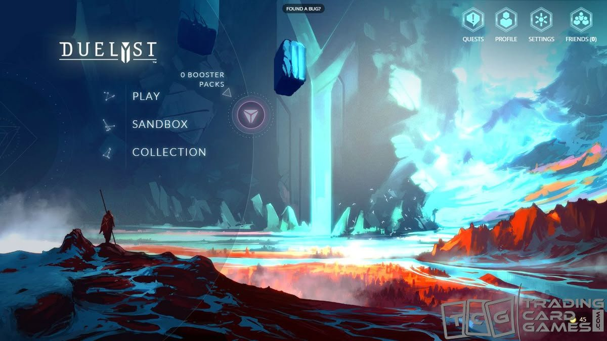

设计文档尚未按定稿纪要改稿（由主窗口修改）。本板以定稿纪要为准；纪要没覆盖的，仍以 notes.md 中的老板指令为准。
本板只定视觉方向。玩法数值、叙事以纪要为准，本板只在需要时引用。标 ⏳ 待裁定 的条目等主窗口裁定。
点击参考图可放大，再点一次或按 Esc 关闭。
版本记录
| 版本 | 时间 | 内容 |
|---|---|---|
| v1 | 2026-11-05 17:14 | 初版：五张参考图的取舍、色板、分对象板块、5 个待议点（⚖️①～⑤）交龙王重新设计会 |
| v2 | 2026-11-05 老板 17:48 拍板后 | 见下方改动点 |
v2 改动点
- 第 4 节「冲突与待议点」改为「已定」：①～⑤ 写入会上结论，v1 的方案对比表删除。
- 修正去色差冲突：龙身亮端
#88AEA0（会上值）→#7FA295；定去色口径为 Rec.601 luma，写出计算（2.5）。 - 龙身渐变的中段、暗端一并移到色相 155～160°：中青
#4E7A79→#587A6D，墨青#1D3436→#25342E（v1 的两个值色相约 179° / 185°，不在定稿范围内）。v1 亮端#8DB8B4作废。 - 预警色统一：对比 M2 实现的
#7FE6F0与 v1 的#45F0EC，美术推荐#7FE6F0（⏳ 最终由主窗口裁定，2.6）。 - 龙王：补定稿分段尺寸与分段示意图、二阶段外观、破绽 / 受击 / 倒下的外观要点。
- 场景：补 40 m 涡面 + 6 m 龙游环带、水墙内径 52 m、涡心纹理明暗差、渔灯检查点、倒下停转，附俯视示意图；通行区限高随哪吒飞高改为 4.5 m。
- 哪吒：补浮动高度、红绫参数与剪影保护手段。
- 封面：按 ⑤A 定稿（加「一段龙尾破框」）；环境浮动上限 0.25 Hz → 0.2 Hz。
1. 总基调
深海巨沟里的一团火——冷、暗、巨大的水，压着一个小而亮、往上蹿的少年。
「火对水」怎么贯穿（定稿口诀：火是竖线，水是圆）
| 层面 | 火（哪吒） | 水（龙王与环境） |
|---|---|---|
| 色 | 朱红、赤金、火焰橙，暖、饱和 | 冰青→墨青（色相 155～160°）、墨青铜、深蓝，冷、压暗 |
| 光 | 点状自发光（绫、枪尖、风火轮） | 大面积弱光（顶光柱、月白青三成亮度，二阶段 45%） |
| 形 | 小、尖、向上（发髻、枪、上飘的红绫） | 大、长、斜、盘旋（长龙、斜壁、漩涡） |
| 动 | 竖向上冲，快、轻，像火苗（0.8 Hz） | 龙沿躯干横向行波、绕圈游（0.4 Hz）；环境横向、成片同步（≤ 0.2 Hz） |
| 尺度 | 人小（头顶 ≤ 3.2 m） | 龙 18 m、漩涡 52 m、沟更大 |
关键词
2. 色板
HEX 为建议值，供概念图和材质起稿用；正式值由技术美术在引擎里按 2.5 的去色口径和色盲测试校准。
色相 H、饱和 S、明度 V 均按 HSV 计：S = (max − min) / max，V = max / 255。
2.1 哪吒方
能：短甲、红绫本色、衣料
不能：发光；地面特效；HUD 警示
能：金纹、护腕、乾坤圈、红绫金纹（冷却填充）、开始/结算界面哪吒侧细框、锁定标记
不能：用作龙王的金；大面积铺底
能：莲花纹、内衬、小面积高光
不能：大面积使用（易与白须、月白青混读）
能：只给三处自发光：混天绫、枪尖、风火轮
不能：上短甲；出现在龙王和环境上
2.2 龙王方
龙身渐变（v2）：亮端 #7FA295 → 中青 #587A6D → 墨青 #25342E，三点色相都在 155～160°。
能：龙身固有色渐变浅端：腹部、头颈
不能：发光；进泛光；去色后必须比预警暗 ≥ 30 灰阶（见 2.5）
能：渐变中段：躯干侧面；背鳍尖勾边
不能：同上
能：背部、尾段，由头到尾逐渐变暗
能：背鳍根、鳞缘、角根、退化小爪
不能：提亮到比背景亮
能：鹿角尖、鳞缘细描、须根饰件
不能：大面积；用哪吒的赤金色值
能：龙身唯一的发光：鳞纹、眼
不能：闪烁；进泛光；收缩；截图去色值高于预警
能：龙须、眉、鬃末梢
不能：染青色
作废：v1 的 #8DB8B4、#4E7A79、#1D3436；会上的 #88AEA0（去色差只有 27.4，见 2.5）。
2.3 环境
能：远景、海沟深处、画面暗区
能：中景水体、水墙主体
不能：偏青到接近冰青
能：海沟斜壁、岩柱
不能：节理高光超过 #56606A
能：漩涡涡面固有色
不能：r < 14 m 涡心纹理明暗差超过 8 灰阶（见 ②）
能：海面直下的光束、焦散
不能：预警范围内超过三成亮度；用冰青
环境色的彩度（max − min）不超过 70（水雾蓝 66、涡面蓝灰 48），保证预警在雾里仍是彩度最高的冷色。
2.4 功能色（规则色，不可挪用）
美术推荐 #7FE6F0（M2 已实现）/ 备选 #45F0EC（v1）· 描边 #0A3A6B
能：只用于地面预警；地面贴花层；闪烁+收缩
不能：进泛光；受水雾染色；HUD、颗粒、涡面、龙身都不用这个色值
能：哪吒的地面特效、接触光（柔边，恒定）
不能：闪烁、收缩；接触光要绘制在预警之下
易混色对照
色值铁律
- 闪烁和收缩只属于地面预警（龙受击也不闪光）。
- 画面里最亮、最饱和的冷色只能是预警冰青。
- 蓝对橙的对比要在色盲模拟和去色截图里都成立。
- 预警去色后比龙身亮端高 ≥ 30 灰阶（Rec.601）。
2.5 去色口径与计算（修正会上冲突）
口径：Rec.601 luma，直接用 sRGB 编码值（0～255），不做线性化：
| 色值 | 计算 | Y′ |
|---|---|---|
#88AEA0（会上亮端） | 0.299×136 + 0.587×174 + 0.114×160 = 40.66 + 102.14 + 18.24 | 161.0 |
#45F0EC（v1 预警） | 0.299×69 + 0.587×240 + 0.114×236 = 20.63 + 140.88 + 26.90 | 188.4 |
#7FE6F0（M2 预警） | 0.299×127 + 0.587×230 + 0.114×240 = 37.97 + 135.01 + 27.36 | 200.3 |
#7FA295（v2 亮端） | 0.299×127 + 0.587×162 + 0.114×149 = 37.97 + 95.09 + 16.99 | 150.1 |
#FFA531（哪吒橙金） | 0.299×255 + 0.587×165 + 0.114×49 = 76.25 + 96.86 + 5.59 | 178.7 |
#2C4A5C（涡面蓝灰） | 0.299×44 + 0.587×74 + 0.114×92 = 13.16 + 43.44 + 10.49 | 67.1 |
| 对比 | 差值 | 是否 ≥ 30 |
|---|---|---|
#45F0EC − #88AEA0 | 27.4 | ✗（制作人核对属实） |
#7FE6F0 − #88AEA0 | 39.3 | ✓ |
#45F0EC − #7FA295 | 38.3 | ✓ |
#7FE6F0 − #7FA295 | 50.2 | ✓ |
#7FA295（采纳制作人建议值）。H 157.7°、S 21.6%、V 63.5%，三项都在范围内（155～160°、≤ 30%、≤ 72%）。无论预警最后用哪个值都 ≥ 30，对 #45F0EC 还留 8 灰阶余量，可吸收贴图噪点和受光提亮。我试过更亮的 #84A89A（Y′ 155.6，差 32.8），余量只有 2.8，一受光就可能跌破 30，不采用。引擎验收：关泛光截图，在预警收缩环和同屏龙身最亮的固有色区（腹部 / 头颈受光面）各取 5×5 像素平均，按上式算，差 ≥ 30。屏幕上的实际值和 HEX 不同（M2 预警填充层强度 0.45、收缩环 1.2），所以以截图为准、以收缩环为准。二阶段月白青升到 45% 时同样复核：截图去色值须低于预警收缩环。
2.6 预警色统一：#7FE6F0 vs #45F0EC ⏳ 推荐，最终由主窗口裁定
| 指标 | #45F0EC（v1） | #7FE6F0（M2 实现） | 谁占优 |
|---|---|---|---|
| H / S / V | 178.6° / 71.3% / 94.1% | 185.3° / 47.1% / 94.1% | — |
| 去色 Y′ | 188.4 | 200.3 | — |
与龙身亮端 #7FA295 的去色差 | 38.3 | 50.2 | #7FE6F0 |
| 与龙身亮端的色相差 | 20.9° | 27.6° | #7FE6F0 |
与哪吒橙金 #FFA531（33.8°）的色相差 | 144.8° | 151.5° | 相近，都在蓝—黄轴两端 |
| 与哪吒橙金的去色差 | 9.7 | 21.6 | #7FE6F0 |
| 彩度（max − min） | 171 | 113 | #45F0EC |
与水雾蓝 #1E4560（204.5°）的色相差 | 25.9° | 19.2° | #45F0EC |
与涡面蓝灰 #2C4A5C 的去色差 | 121.3 | 133.2 | #7FE6F0 |
#7FE6F0 ⏳ 推荐，最终由主窗口裁定
- 与龙身亮端的去色差：50.2，比
#45F0EC多 12 灰阶。即使龙身受光提亮、贴图有噪点，也离 30 的底线很远。 - 与橙金的色盲可辨：红绿色盲（protan / deutan）保留蓝—黄轴，两个候选和橙金都分得开。蓝黄色盲（tritan）会削弱蓝—黄轴，这时主要靠明度区分：
#45F0EC与橙金去色只差 9.7，几乎同灰；#7FE6F0差 21.6。这一点也直接关系到「3 秒去色、5 人盲测」，以及「预警与接触光叠在一起」的情况。 - 在深蓝水雾下的可读性：这一项
#45F0EC占优。它彩度更高（171 vs 113），色相离水雾蓝更远（25.9° vs 19.2°）。#7FE6F0偏蓝偏淡，被雾染色后会先往水雾蓝靠。补救做法有三条：预警材质不受水雾染色；保留深蓝描边；环境色彩度上限 70。做到这三条后，#7FE6F0的彩度仍是环境最高值的 1.6 倍以上，去色明度也更高（与涡面差 133.2）。 - 成本：M2 已经按
#7FE6F0实现，老板试玩前不用返工。
若主窗口选 #45F0EC：龙身 #7FA295 仍然达标（38.3），但要另想办法拉开与橙金的去色差（只有 9.7），比如压低接触光亮度，或靠描边和柔边 / 硬边来区分。
交技术美术核对：M2 的预警材质走 glow 管线，请确认不进泛光、不受雾。M2 的描边约为 #1A386F（线性 0.01 / 0.04 / 0.16），与 #0A3A6B 视觉上相当，不必改。
3. 分对象板块
3.1 东海龙王（东方神龙）

- 蛇形长躯盘成 S 形，头和鹿角在最高处
- 头部：狭长龙首、张口獠牙、鬃毛向后炸开
- 背鳍：一排连续尖刺鳍，从头到尾
- 爪形：细长张开的鹰爪（只取形状）
- 冰青→墨青渐变：腹浅背深、头亮尾暗
- 游动曲线有起伏，须、鬃向后飘
- 星座连线、橙色圆点等装饰
- 橙色火苗（橙金是哪吒专用色）
- 青色龙须（本作白须）
- 黑色鹿角（本作青铜带金）
- 大面积高亮冰青（撞预警色）
- 四肢数量与比例（老板定：几乎无爪）
- 2D 平涂线描、白底、水印署名
定稿分段尺寸 ✅ 17:48
| 部位 | 尺寸 | 视觉要点 |
|---|---|---|
| 全长 | 18 m（脊柱 40 节 × 0.45 m） | 向尾部渐细 |
| 胸径 | 1.5 m | 胸部最粗，之后渐细 |
| 头 | 2 m | 狭长龙首；平时闭嘴，只在预兆时张口 |
| 鹿角 | 1.2 m | 墨青铜，尖端旧金 |
| 白须 | 两条，各 3 m（≥ 头长 1.5 倍） | 平时下垂，显老 |
| 鬃 | 0.8 m | 向后炸开，末梢白须色 |
| 背鳍 | 颈→尾，0.5 m 渐变到 0.15 m | 根部墨青铜，尖端中青 #587A6D 勾边（防止墨青背、尾融进深海蓝） |
| 尾穗 | 尾末 2 m | 鳍穗 |
| 退化小爪 | 两对，≤ 0.3 m | 贴在腹部，不进招式和剪影主体 |
尺寸口径：18 m 指脊柱全长，头（0～2 m）和尾穗（16～18 m）都算在内；鹿角、须、鬃、背鳍、小爪是附件，不计入全长。如果绑骨口径不同，由技术美术确认。
示意图只表达比例和标注，颜色取 2.2 的 v2 色值；不代表最终造型。
落到本作
- 剪影锚点：「头 + 角 + 须」这一簇，再加长躯和连续背鳍。头部（含角、须、鬃）先在造化素材库找，躯干由代码生成（老板 3A）；正式头必须符合本板的尺寸和色值。
- 姿态：悬浮游动，躯干下沿离涡面 2～4 m，包围盒高 ≤ 8 m；从哪吒上方经过时下沿 ≥ 3.5 m。行波 0.4 Hz、波长 9 m，振幅从颈部 0.15 m 到尾部 0.6 m；须、鬃滞后飘动。龙首始终朝向哪吒，偏差 ≤ 30°（执念的老父亲）。
- 预兆：水停就是要出招。行波相位冻结（保留形状、不归零），龙首抬起定住；四招靠竖 / 横 / 低 / 高四种剪影区分（扑噬颈部 S 钩头抬到 5 m / 横扫尾扬到 3 m / 冲锋全身拉直贴面、背鳍竖起 / 蟠涛盘成圆盘、头立到 7.5 m）。
- 配色：冰青→墨青渐变（2.2）只作固有色，不发光。
- 发光：只有月白青，常亮不闪、不进泛光。
- 破绽姿态：龙首 2.2 m（与哪吒近乎平视），下颌贴面喘息，眼盯哪吒，行波降到 30%。
- 受击：只在被打中的那一节叠加 ±4° 抖动，6 步回弹；须、鬃给一次弹簧冲量；不闪光。
- 二阶段外观（龙吟 120 步内完成）：
- 发光：月白青 30% → 45%，线性升，不闪；
- 背鳍：从颈到尾依次竖起，放大到 1.4 倍（20～60 步）；
- 尾穗：展开到 1.5 倍（40～80 步）；
- 白须：被激流扯乱（60～100 步），表示老父亲失了体面。
- 倒下：行波从头到尾衰减，龙首落到涡面，第 150 步闭眼，漩涡同时停转；须回落下垂（怒气散了，只剩老父亲）。
3.2 哪吒

- 双丫髻大而饱满，带花饰
- 混天绫宽、长、大幅飘动，大弧线拖尾
- 绫带末端火焰纹 → 金纹 / 冷却填充纹样
- 腾空、四肢舒展，「轻灵如火」
- 赤足、腰间铃铛与流苏
- 枪头火焰形倒钩
- 萌系、偏女性化的脸型和体态
- 露腰短衣（本作赤红短甲 + 莲花纹护腕）
- 脚踝圈（易与右前臂乾坤圈混淆）
- 弯弧枪身（火尖枪是 2.4 米直枪）
- 图中无风火轮（本作常驻）
- 线稿画风、白底
定稿高度与浮动 ✅ 17:48
| 项目 | 定稿值 |
|---|---|
| 风火轮底离涡面 | 平均 1.15 m，谷底 1.0 m |
| 浮动 | 静止 ±15 cm、0.8 Hz，上冲占 35%（上冲快、回落慢，像火苗）；移动 ±10 cm；飞驰 ±5 cm |
| 摆荡 | ±3°、0.55 Hz（飞驰时去掉） |
| 头顶峰值 | 3.10 m（身体加发髻 ≤ 3.2 m，不含红绫） |
| 红绫 | 两股，各 2.2 m、12 节；末端 1.6 Hz，滞后 1/4 周期；只在上冲峰值过头顶，最高 3.45 m（低于龙过顶时 3.5 m 的下沿） |
| 翻滚中心 | 2.0 m |
| 双丫髻 | 放大，是头顶最高的实体剪影 |
落到本作
- 剪影三要素不变：双丫髻、红绫、比人长的火尖枪。双丫髻放大，红绫加宽。
- 红绫是第一动态元素：宽、长、分两股、大弧线。
- 接触光、受击判定仍固定在涡面上，不随浮动走。离地 1.15 m，接触光离脚越远越能说明「浮着」。
- 少年写实：15～16 岁，1.65 米，偏瘦但结实。
- 发光只在三处：混天绫、枪尖、风火轮；短甲不发光。
剪影保护手段（定稿，见 ③）
- 双丫髻放大，红绫从发髻外侧绕过，不压正中。
- 红绫进入发髻正上方 ±15° 时加侧向力，穿过速度 ≥ 100°/s，停留 ≤ 18 步（0.3 s）。
- 超时才用屏门抖动兜底；不用 40% 半透明（会和透明水墙抢绘制顺序）。
- 静止时红绫飘向后上方；过顶只出现在上冲峰值。
- 验收：哪吒在最高浮动位、红绫在头顶时，30 m 灰模仍能认出三要素。
3.3 场景：斜向巨型海沟 + 漩涡战斗区

- 整个场景的主基调：斜向巨大岩壁、极大尺度
- 两侧高壁夹出通道，向远处收拢，引导视线
- 人极小、壁极高的压迫感（龙宫沉郁）
- 近景清晰、中景岩柱、远景被雾吃掉
- 竖向节理、方块断裂的岩体
- 顶部透光
- 天空、飞鸟（水下换成鱼群）
- 陡峭碎石坡（通行区地面要平）
- 通行区上方 4.5 米内的内倾遮挡
- 铅笔素描、黑白灰（本作写实彩色、深蓝雾）
- 画中人物本身
定稿漩涡尺寸与转速 ✅ 17:48
| 区域 | 半径 | 转速 | 视觉要求 |
|---|---|---|---|
| 涡心 | r < 14 m | ≤ 1°/s | 纹理明暗差 ≤ 8 灰阶（Rec.601 口径），几乎静止 |
| 涡面外圈 | 14～20 m | 2°/s | 旋转感从这里开始；哪吒活动边界 r = 19.5 m，伤害区全在涡面内 |
| 龙游环带 | 20～26 m（宽 6 m） | 随水墙 | 龙下沿 ≥ 2.5 m，只游不出招 |
| 水墙 | 内径 52 m | 30 s 一圈；二阶段 20 s 一圈（老板 2A） | 水雾蓝主体，涡心转速不变 |
示意图半径按比例；水墙厚度、入口位置、渔灯位置为示意。
落到本作
- 不做宫殿。宏大自然地貌：一条斜着切过画面的巨大海沟。
- 斜壁可以内倾，但通行区上方 4.5 m 内不得有遮挡（哪吒加红绫最高 3.45 m）。
- 海沟底部是巨型漩涡：40 m 涡面 + 6 m 龙游环带，四周是内径 52 m 的旋转水墙。
- 涡面只转贴图坐标，用两套相位交替消掉螺旋；预警固定在世界坐标；接触光跟着哪吒根节点走，不随涡面转；焦散在预警范围内压到三成。
- 涡面边缘（r = 20 m）建议用一圈低对比浪沫线标出，不用冰青。
- 入场：哪吒从斜壁岩缝飞入 → 水墙里长影绕场约 4 s → 龙尾扫过入口、水墙合拢（龙亲手封口）→ 龙首破墙降到 2.2 m 说开场台词。
- 检查点：岩缘上一盏被洪水冲下海的陈塘关渔灯，复用海灯资源，不加字符串（老板 4A）。灯光沿用海灯原色，不用火焰橙和预警色。
- 倒下后漩涡停转：第 150 步与龙闭眼同步，「东海潮平」落到画面上。
- 光：海面透下的光柱直贯海沟，兼作漩涡中轴（与封面呼应）。
- 层次：近景碎岩、海草（战斗区中央不种）→ 中景岩柱、鱼群、水墙 → 远景被深蓝雾吃掉，只晃光束。
3.4 界面与 HUD

- 深色底、细线框、单一强调色，信息密但干净
- 粗体窄字大标题 + 小字说明（Boss 名、「东海潮平」）
- 六边形技能图标、圆环进度（混天绫冷却）
- 选中态：描边加亮
- 角色压框 / 破框（老板新增）
- 选人布局和角色卡片（本作没有选人）
- 现代电竞科幻气质
- 红色、青绿两种强调色
- 纯拉丁字体（本作中英双语）
- 《无畏契约》角色、图标、名称、署名与水印
落到本作
- 东方化：细线框加青铜、墨色、金纹、云水纹的少量纹饰。
- 单强调色：建议赤金
#D4A03A（哪吒侧）；龙王侧信息用墨青铜。HUD 不用预警冰青。 - 锁定标记：能打实心、打不到空心（纪要议题 4），用赤金，不用预警色。
- 中文字体另选：粗体窄字风格的中文标题字 + 易读小字；英文同风格搭配。
- 破框只用于：开始界面、加载画面、结算「东海潮平」、封面。
- 哪吒冲出朱红或赤金细框，红绫甩出框外。
- 龙王一侧用墨青铜框，长躯从框里穿出。
- 战斗 HUD 不用破框，保持极简，不挡画面。
3.5 封面与开始界面

- 冷暖对角分割：冷色与朱红橙金在中线交锋
- 极小人物 + 极宏大场景；持长枪小人在前景高处背对镜头
- 中央巨大光柱
- 前景暗岩剪影 → 中景发光地貌 → 远景雾和光
- 左侧大块暗区放标题和菜单
- 大色块、概括、有绘画感的光效
- 《Duelyst》标志、菜单、按钮、图标
- TCG 网站水印
- 漂浮水晶方块、科幻建筑
- 陆地天空、云、熔岩河
- 2D 卡通插画画风
- 冰青直接画在地面上
落到本作
- 构图：小哪吒在前景高处（踩风火轮悬在岩缘上方），持火尖枪背对镜头；远景巨龙绕光柱 / 漩涡中轴盘旋；用尺寸差拉开对比。
- 破框（定稿 ⑤A）：细线框框住整个场景；枪尖、红绫和一段龙尾破框而出。
- 冷暖对角：哪吒一侧朱红橙金，龙一侧冰青墨青。封面上的龙身用 2.2 的 v2 渐变；预警色不上封面。
- 中央光柱：海面直贯海沟的光束，或漩涡中轴。
- 版式（兼开始界面）：左侧暗区放标题和菜单，右侧大场景。
- 中英两版画面相同：中文标题 / 英文
White Myth: Nezha。加载画面与开始界面按当前语言显示。 - 封面草图由美术总监另交（纪要 E 节）。
4. 已定 龙王重新设计会 · 老板 17:48 拍板
① 龙身冰青 vs 地面预警冰青 → 定 B（明度 / 饱和分离 + 色相轻偏）
- 龙身整条渐变色相移到 155～160°（青绿灰），饱和 ≤ 30%、明度 ≤ 72%，只作固有色、不发光。
- 色值：亮端
#7FA295、中青#587A6D、墨青#25342E（2.2）。会上的#88AEA0去色差只有 27.4，已按制作人核对改掉（2.5）。 - 去色口径：Rec.601 luma，预警比龙身亮端高 ≥ 30 灰阶。
- 预警色：⏳ 美术推荐
#7FE6F0，由主窗口裁定（2.6）。
② 涡面旋转 vs 预警、焦散、接触光的可读性 → 定 B（分区）
- 涡心 r < 14 m：转速 ≤ 1°/s，纹理明暗差 ≤ 8 灰阶。
- 14～20 m：2°/s。水墙 30 s 一圈，二阶段 20 s 一圈；倒下后第 150 步停转。
- 只转贴图坐标，用两套相位交替消螺旋；预警、接触光固定，焦散在预警内压到三成；涡面不用冰青。
- 与外圈的纹理对比：外圈和水墙可以有明显的旋转纹理；涡心低对比，让预警是作战区里最显眼的图形。
③ 哪吒飞高、红绫过头顶后的剪影保护 → 定 B（两侧过顶 + 短停留），兜底改为屏门抖动
- 主手段是侧向力：红绫在发髻正上方 ±15° 内穿过 ≥ 100°/s、停留 ≤ 18 步。
- 超时才用屏门抖动兜底。不用 40% 半透明（我在会上提的方案，会和透明水墙抢绘制顺序，已撤回）。
- 3.2 m 身高上限不含红绫；红绫 ≤ 3.45 m，龙过顶下沿 ≥ 3.5 m。
④ 两套浮动气质 → 定 B（频率 + 曲线 + 方向），扩为三档
- 哪吒 0.8 Hz：竖向，上冲占 35%，各部件错相（火）。
- 龙 0.4 Hz：沿躯干横向行波，绕圈游。
- 环境 ≤ 0.2 Hz：横向、平缓正弦、成片同向同相（v1 写的 0.25 Hz 作废）。
- 相邻两档至少差 2 倍。验收：3 秒画面去色、关泛光，5 个没看过文档的人都能指出火、龙、环境。
⑤ 封面「小人物」与「破框」怎么共存 → 定 A（框住场景）
- 细线框框住场景，龙在远景盘旋，枪尖、红绫和一段龙尾破框。
其他会上留意事项的去向
- 龙王游动的气质 → 已定：0.4 Hz 行波，介于哪吒和环境之间（④）。
- 预兆姿态 → 已定：相位冻结 + 竖 / 横 / 低 / 高四种剪影（3.1）。
- 龙王旧金 #A88B4E vs 哪吒赤金 #D4A03A → 仍需看色样，会上未讨论。
5. 版权声明
- 五张参考图只用于确定方向。
- 不放进游戏，不描摹，不做贴图，不作为任何素材。
- 来源：小红书画师 nightcrow（保留所有权利）；《无畏契约》选人界面同人再设计（作者未知）；《Duelyst》主菜单截图（Counterplay Games）；两张老板提供图（来源待确认）。
- 参考图中的标志、角色、名称、署名和水印一律不取。